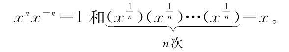

我们回忆一下这一章做了什么。
1.在将幂的思想从无意义的缩写扩展为有意义的思想时，我们发现自己无意中创造了一堆不同的机器。
2.我们不知道如何对这些机器求导，但是根据我们发明幂的方式，我们知道如何将它们与更简单的机器关联起来。例如：

3.将这些让人迷惑的新机器与更简单熟悉的机器关联起来让我们可以“诱骗数学”告诉我们这些新机器的导数是什么。
4.在求这些新机器的导数的过程中，我们发明了几个锤子：相加锤子、相乘锤子和重新缩写锤子。这些锤子让我们可以将难题拆散为更简单的问题。
5.让作者吃惊地是，这一章的中间发生了让人意外的对话，我们认识了新朋友。这最终也许会对这本书余下的部分有影响。我不知道前面的部分是不是还安全。
6.老实说：上面这条有点吓到我了。